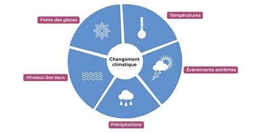
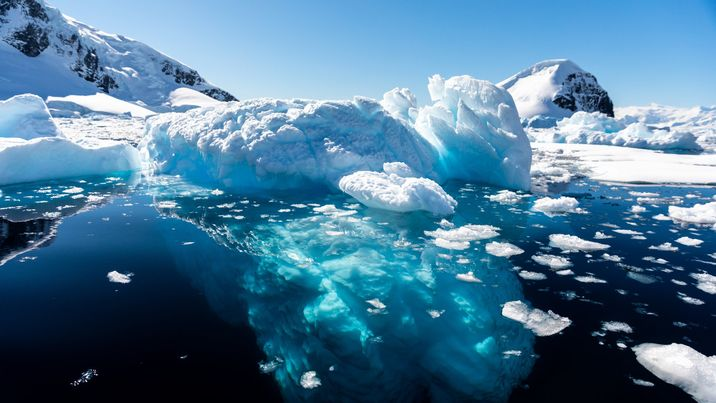

Le changement climatique est l'une des plus grandes menaces contemporaines à la stabilité de notre planète. Il se manifeste par des altérations à long terme des conditions météorologiques, des températures globales, des schémas de précipitations et des phénomènes météorologiques extrêmes. Ce phénomène est principalement attribué à l'augmentation des concentrations de gaz à effet de serre dans l'atmosphère, résultant de l'activité humaine telle que la combustion de combustibles fossiles, la déforestation et l'industrialisation. L'impact du changement climatique est étendu et complexe, touchant divers aspects de la vie sur Terre. Les conséquences incluent la fonte des calottes glaciaires et des glaciers, l'élévation du niveau de la mer, les événements météorologiques extrêmes plus fréquents et plus intenses, la perturbation des écosystèmes, la perte de biodiversité et des conséquences graves pour la sécurité alimentaire et l'accès à l'eau potable.  Face à cette réalité, la communauté internationale reconnaît l'urgence d'agir pour atténuer les émissions de gaz à effet de serre, s'adapter aux changements inévitables et promouvoir des pratiques durables. Les accords tels que l'Accord de Paris sur le climat témoignent des efforts mondiaux visant à limiter le réchauffement climatique à un niveau gérable. Cependant, la mise en œuvre efficace de ces mesures nécessite une action collective, des politiques innovantes, des technologies propres et une sensibilisation mondiale.
En définitive, le changement climatique exige une mobilisation mondiale, car il transcende les frontières nationales et affecte la vie de millions de personnes à travers le monde. Comprendre son impact, adopter des comportements durables et œuvrer ensemble pour préserver notre planète sont des impératifs cruciaux pour assurer un avenir durable pour les générations futures.
La fonte accélérée des glaces polaires et la montée du niveau de la mer représentent-elles une menace imminente pour les populations côtières et les écosystèmes, et comment pouvons-nous élaborer des stratégies efficaces pour atténuer les conséquences de ces changements climatiques majeurs ?
L'élévation du niveau de la mer est l'un des impacts les plus visibles du changement climatique. Elle est principalement due à deux facteurs liés au réchauffement planétaire :
L'ampleur de l'élévation du niveau de la mer peut varier d'une région à l'autre en raison de divers facteurs, tels que la géologie locale, les courants océaniques, et d'autres facteurs géographiques. Cependant, il est généralement observé que l'élévation du niveau de la mer est un phénomène mondial.
Les conséquences de cette élévation sont significatives. Les zones côtières, les deltas et les îles basses sont particulièrement vulnérables aux inondations. Les événements météorologiques extrêmes, tels que les tempêtes et les ouragans, peuvent aggraver ces inondations en provoquant des ondes de tempête et des marées plus élevées.
Les villes côtières densément peuplées et les écosystèmes côtiers sont également menacés. Les infrastructures critiques, telles que les ports, les aéroports, les installations industrielles et les réseaux de distribution d'eau douce, sont exposées à des risques accrus.
Pour faire face à ce défi, des mesures d'adaptation sont nécessaires, telles que la construction de défenses côtières, la mise en place de plans d'urgence, la relocalisation planifiée de communautés vulnérables, et des initiatives mondiales visant à réduire les émissions de gaz à effet de serre pour atténuer le réchauffement climatique à l'origine de cette élévation du niveau de la mer.
La gestion de l'élévation du niveau de la mer nécessite une approche intégrée qui combine des efforts d'atténuation et d'adaptation. Voici quelques solutions et stratégies possibles pour faire face à ce défi :
En conclusion, le changement climatique représente une menace globale qui exige une action immédiate et coordonnée. Les impacts, tels que l'élévation du niveau de la mer et les phénomènes météorologiques extrêmes, transcendent les frontières, affectant des communautés du monde entier.
Pour relever ce défi, il est impératif de réduire drastiquement les émissions de gaz à effet de serre, de favoriser des pratiques durables et d'encourager l'innovation. La sensibilisation et l'éducation sont essentielles pour mobiliser les individus, et la coopération internationale reste cruciale. En unissant nos efforts, nous pouvons forger un avenir plus résilient et durable pour tous.